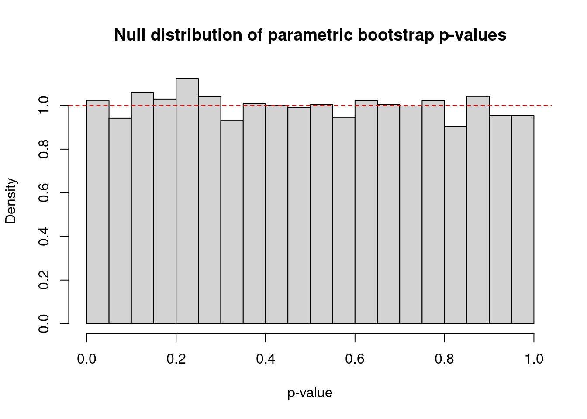
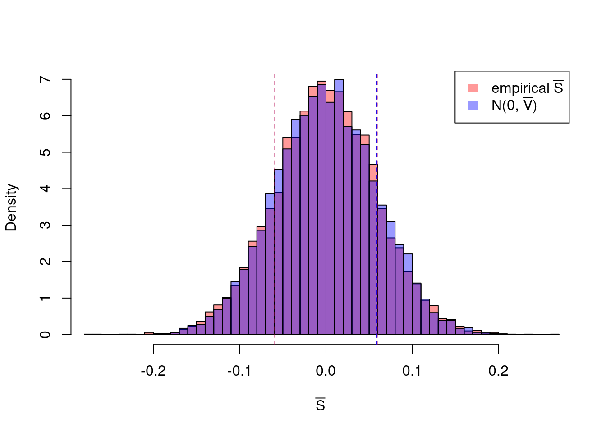

Let \(S_i \in \mathbb{R}^{\binom{p}{2}}\) denote the vector of ECE terms across all pairs at index \(i\), so that \(\bar{S}_j = \hat\sigma_{x_j y_j}\) for each pair \(j\). To test \(H_0\), we need the variance of \(\bar{S} = \frac{1}{n}\sum_{i=1}^n S_i\).
Since \(S_i\) depends only on observations at indices \(i, i+1, i+2\), terms separated by 3 or more indices are independent. The variance therefore has bandwidth 2: \[\begin{align*}
\operatorname{Var}\!\left(\bar{S}\right) &= \frac{1}{n^2}\left(\sum_{i=1}^n \operatorname{Var}(S_i) + \sum_{i=1}^n\bigl[\operatorname{Cov}(S_i, S_{i+1}) + \operatorname{Cov}(S_{i+1}, S_i)\bigr]\right. \\
&\quad\left. + \sum_{i=1}^n\bigl[\operatorname{Cov}(S_i, S_{i+2}) + \operatorname{Cov}(S_{i+2}, S_i)\bigr]\right).
\end{align*}\] Plugging in \(\operatorname{Var}(S_i) = \mathbb{E}[S_i S_i^\top]\) and \(\operatorname{Cov}(S_i, S_{i+k}) = \mathbb{E}[S_i S_{i+k}^\top]\) and estimating by sample quantities gives \[V := \widehat{\operatorname{Var}}\!\left(\bar{S}\right) = \frac{1}{n^2}\left(\sum_{i=1}^n S_i S_i^\top + \sum_{i=1}^{n}\!\left(S_i S_{i+1}^\top + S_{i+1} S_i^\top\right) + \sum_{i=1}^{n}\!\left(S_i S_{i+2}^\top + S_{i+2} S_i^\top\right)\right).\]
Parametric Bootstrap Test. Under \(H_0\), \(\bar{S} \approx N(0, V)\) by the CLT. This gives a direct procedure:
The p-value is \(\frac{1}{B}\sum_{b=1}^B \mathbf{1}\!\left[T^{(b)} \geq T_\text{obs}\right]\).
Code: Parametric Bootstrap P-values are Uniform Under \(H_0\)
config <-scenario(2, n =1000, L =2)pvals <-replicate(10000, { X <-generate_data(config)ece.test(X, type ="bs.parametric", B =1000)$p.value})hist(pvals, breaks =20, freq =FALSE,xlab ="p-value", main ="Null distribution of parametric bootstrap p-values")abline(h =1, col ="red", lty =2)

mean(pvals <0.1)
[1] 0.0972
Consistency of \(V\). The parametric bootstrap is valid only if \(V\) consistently estimates \(\operatorname{Var}(\bar{S})\). If \(V\) is systematically too small, the bootstrap null distribution will be too narrow, producing an excess of small p-values. We check this by simulating many datasets under \(H_0\), computing the empirical variance of \(\bar{S}\) across replications, and comparing it to the average of the estimated \(V\). The two should agree.
Code: Consistency of \(V\)
config <-scenario(2, n =1000, L =2)sims <-map(1:10000, ~ { X <-generate_data(config) n <-nrow(X) S <-ece_terms(X)list(S_bar =colMeans(S),W =as.numeric( (1/ n^2) * (t(S) %*% S +t(rotate(S)) %*% S +t(S) %*%rotate(S) +t(rotate(S, 2)) %*% S +t(S) %*%rotate(S, 2) ) ) )})S_bar_vals <-map_dbl(sims, "S_bar")W_vals <-map_dbl(sims, "W")bs_draws <-rnorm(10000, 0, sqrt(mean(W_vals)))xr <-range(c(S_bar_vals, bs_draws))hist(S_bar_vals, breaks =40, freq =FALSE, col =adjustcolor("red", 0.4),xlim = xr, xlab =expression(bar(S)), main ="")hist(bs_draws, breaks =40, freq =FALSE, col =adjustcolor("blue", 0.4), add =TRUE)abline(v =c(-1, 1) *sd(S_bar_vals), col ="red", lty =2)abline(v =c(-1, 1) *sqrt(mean(W_vals)), col ="blue", lty =2)legend("topright",legend =c(expression("empirical "*bar(S)), expression("N(0, "*bar(V)*")")),fill =adjustcolor(c("red", "blue"), 0.4), border =NA)

8.2 Simulation Results
All simulations are run with exponential error terms in the setting with frequent mean shifts (\(L = 4\)). We see that in all cases, we are able to control type I error.